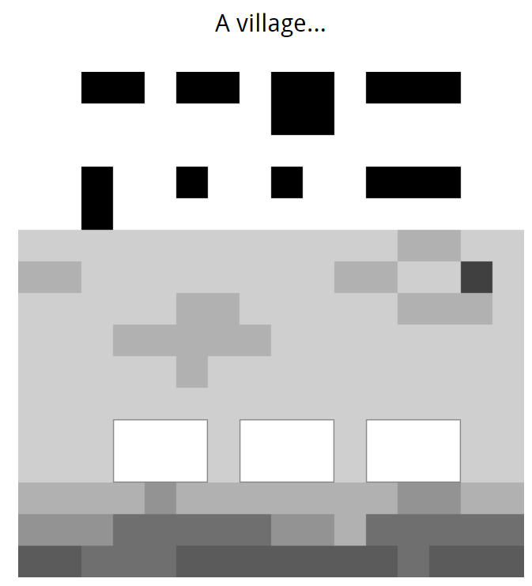
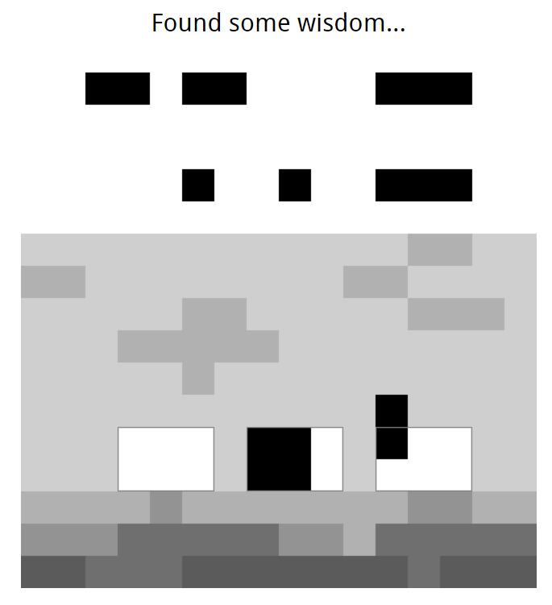
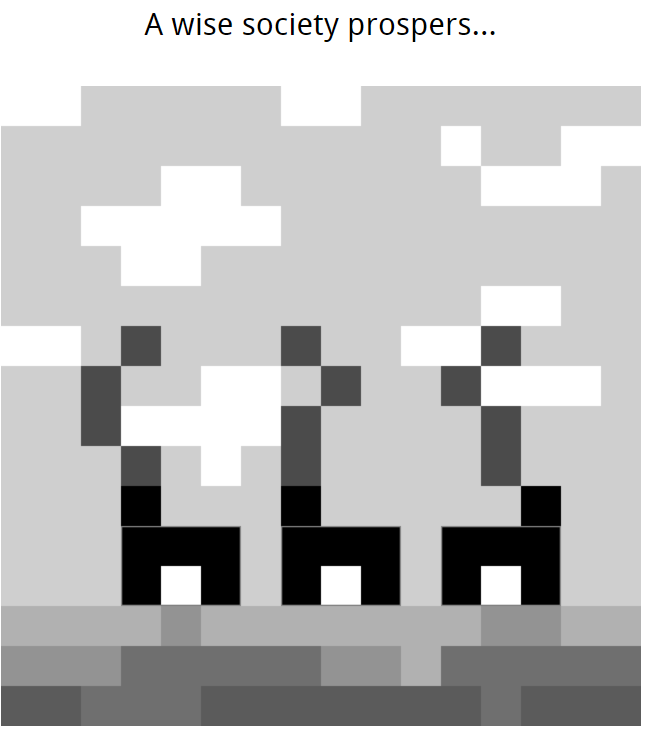
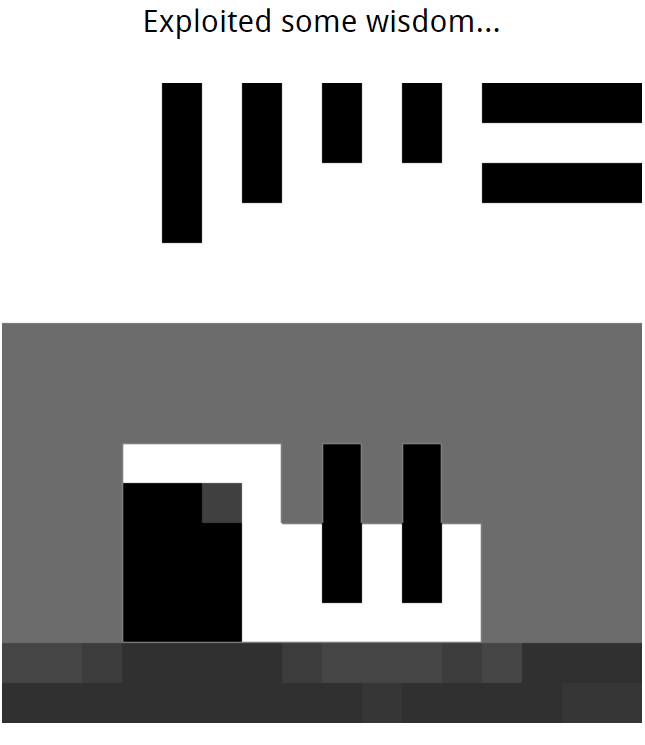
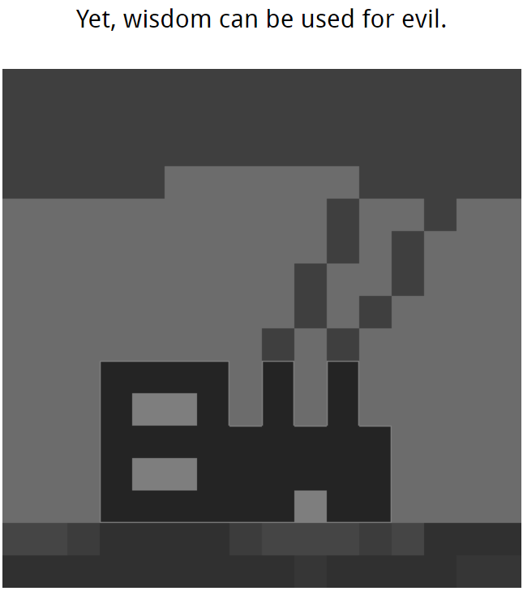
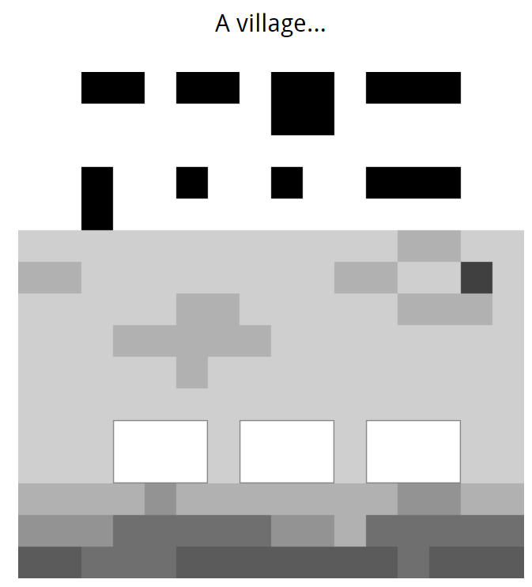
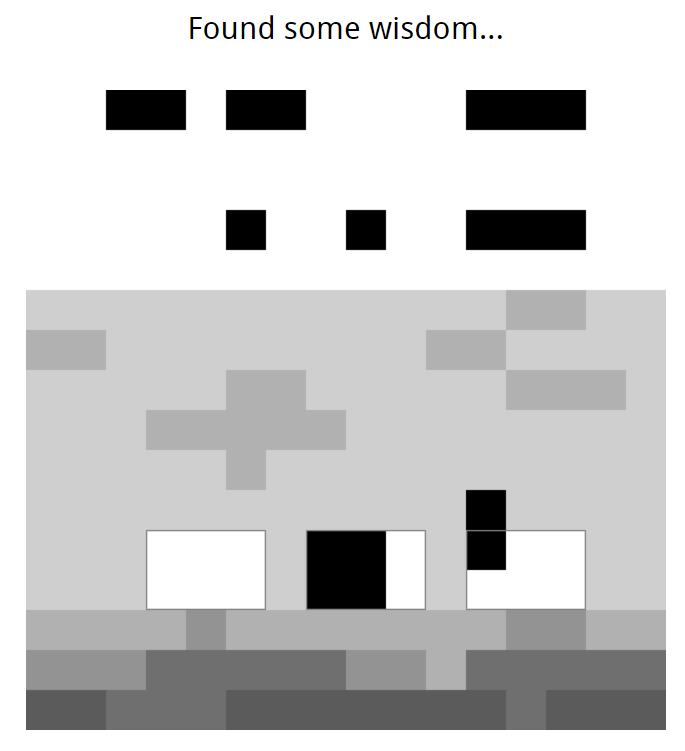
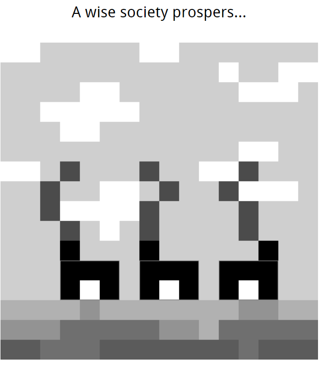
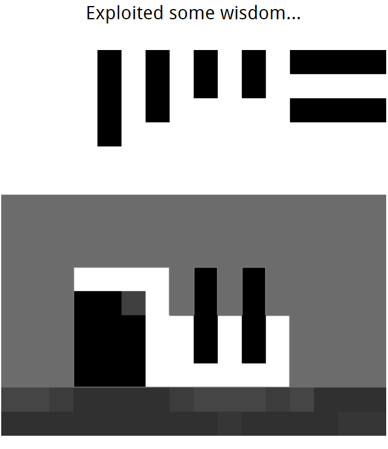
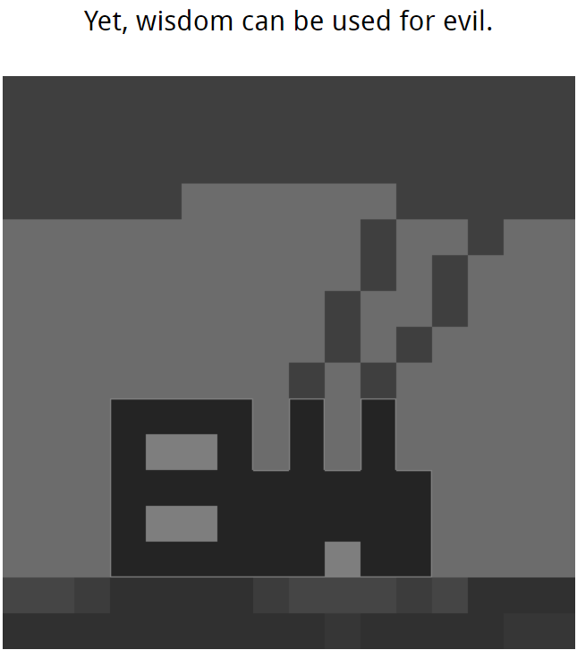
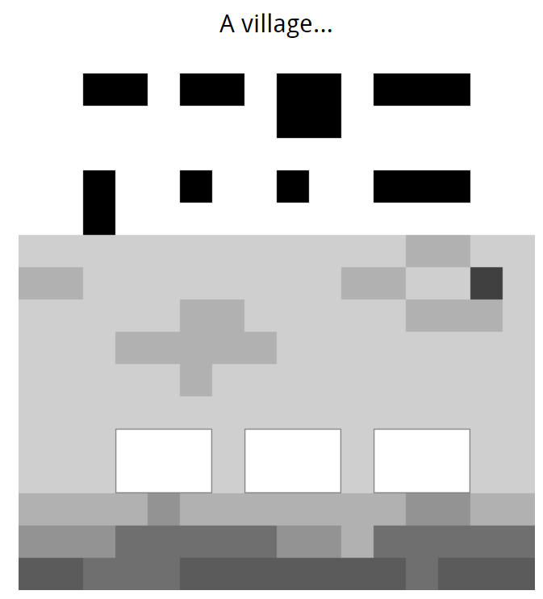
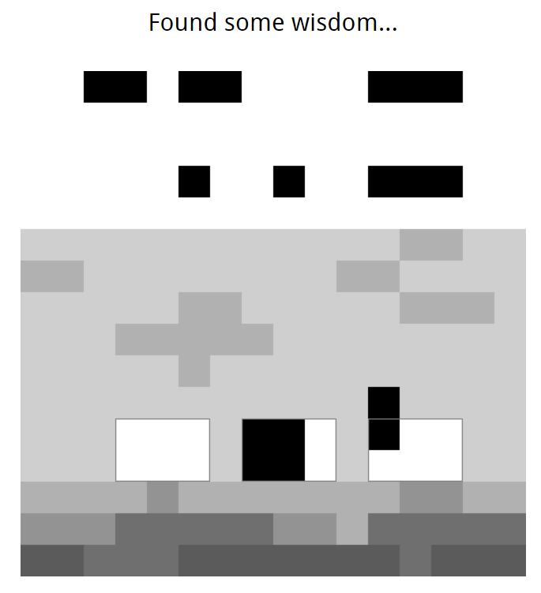
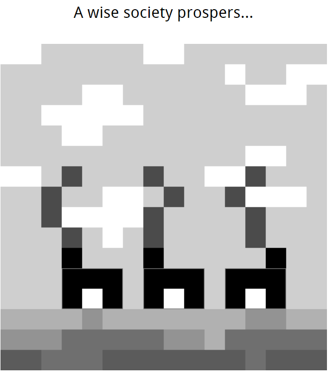
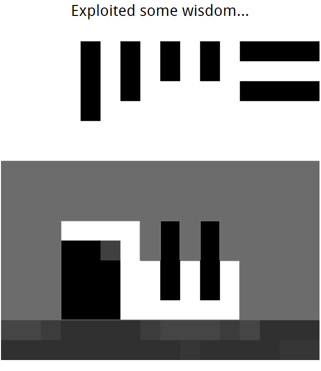
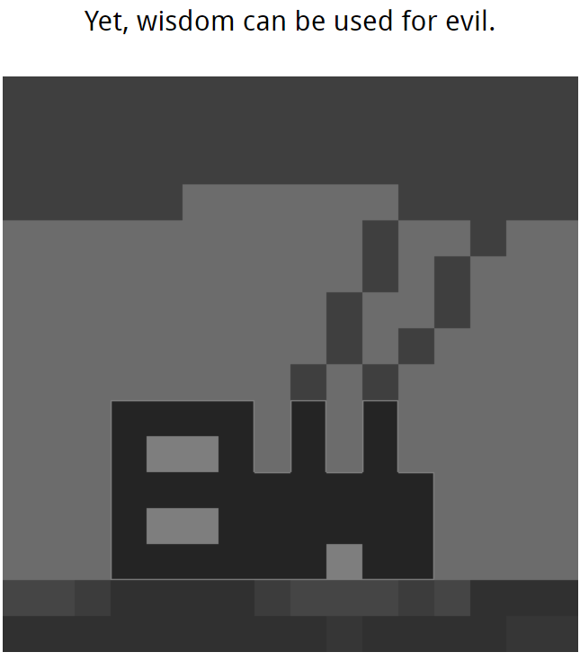
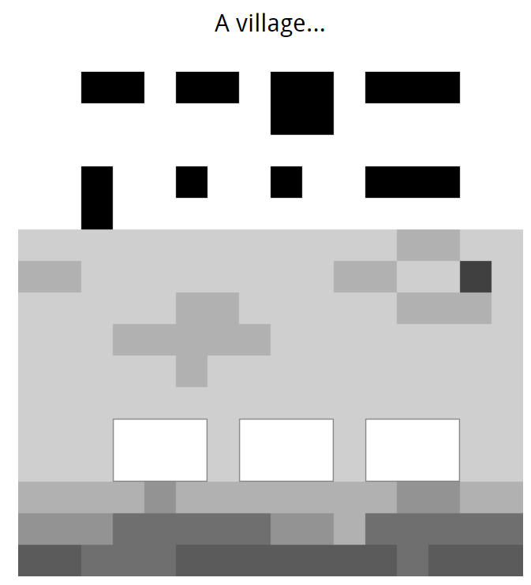
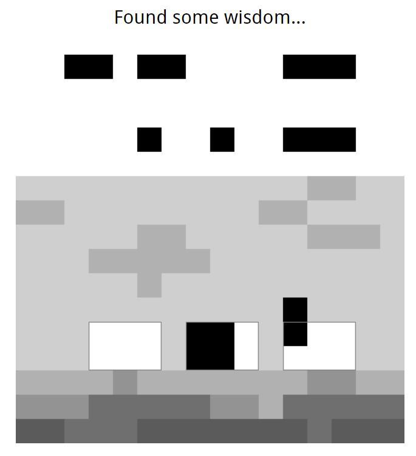
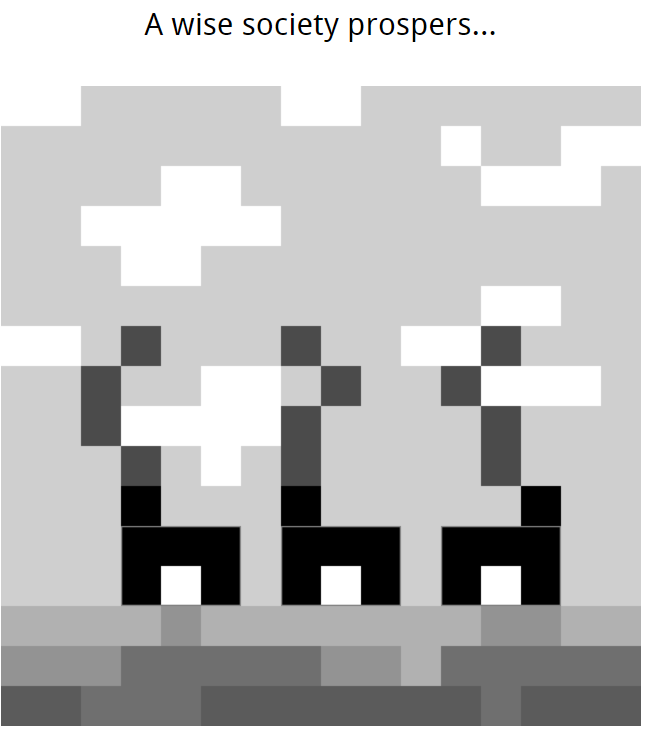
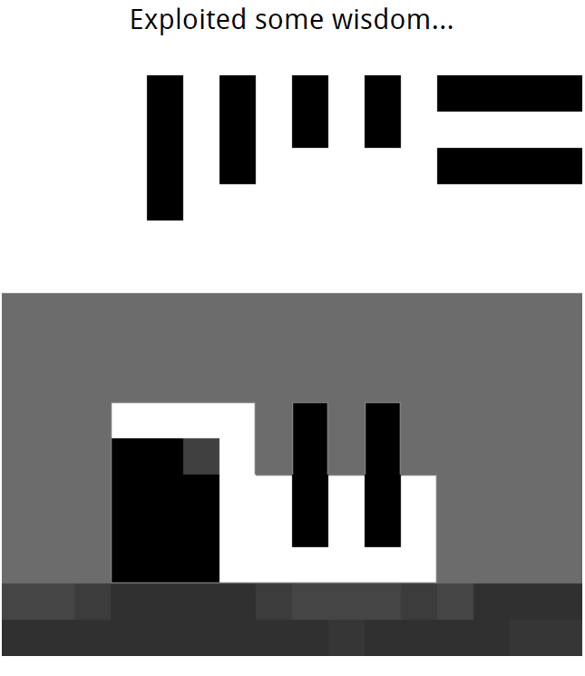
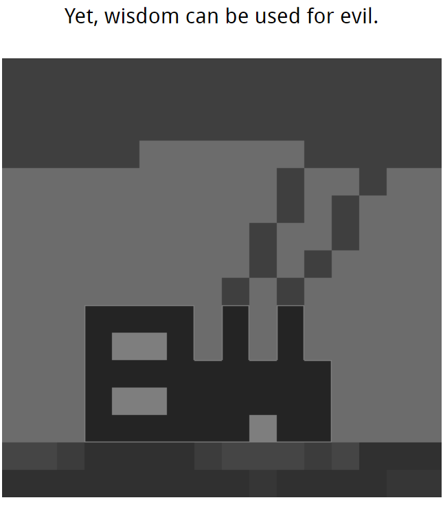
Collective Wisdom was created as part of a Digital Game Design class at WPI, and evolved over the course of multiple builds. It was created in Perlenspiel, an ultra-lightweight, Javascript-based game engine, which intentionally limits graphical possibilities to encourage intelligent, elegant design.
Players click on pieces of "wisdom" displayed at the top of the screen, dragging them to fit in the outlines shown on-screen. By doing so, players gradually assemble buildings which come to life in animations; essentially, players use wisdom to build progressively more advanced societies.
Completed: 2021
Development time: ~3 days
Languages: Javascript
Tools: Perlenspiel engine, IntelliJ IDEA, Aseprite
Lead Programmer
Lead Designer
For the last assignment in Perlenspiel, I decided to try and push the engine's storytelling capabilities a little bit. This meant using the single line of text allowed to developers, which, until now, I'd sworn against using, worried it'd become a crutch for otherwise elegant design. What resulted is, I think, fairly whimsical, but also a little pretentious. But hey, what's the fun of art if you can't do a little grayscale pretentiousness sometimes, right? Originally, the blocks of "wisdom" at the top of the screen were conceived as words, but given that Perlenspiel only allows the display of one Unicode character per pixel, I couldn't express many interesting words. I settled on conveying the abstraction through text instead and— oh! Now that I think about it, why didn't I use the book Unicode character? Or, maybe, relied on a story that involves less abstract themes? I am quite proud, though, of the little animations and the click-and-drag and block placement systems, which had to be programmed manually.
Download here
Play online here